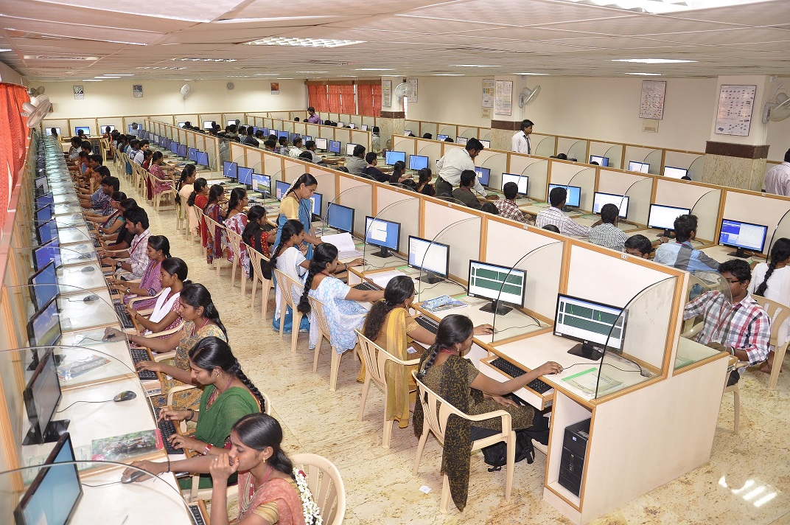

.jpg)
Computer Science Engineering
The department was started in the year 1991-92 with an intake of 60. At present the intake is 180. The department has M.E(CSE) Course with and intake of 24.The Department aims at providing high quality training to students through the latest in computer technology. In order to maintain the standard of education, the department constantly upgrades the academic syllabi so as to keep the students well trained to deal with changing trends in the field of Computer Science and Engineering The Department of Computer Science and Engineering is fully equipped with the state of the art laboratories having DELL and HP Machines. The department has 3 Servers (WINDOWS and LINUX) connected to 120 core i5 processor and 132 Core 2 Duo nodes. The department has a rich repository of licensed software covering a wide spectrum of applications.Periodic guest lectures, workshops through CSI , ISTE& IE(I) Student Chapters are organized for the benefit of students to supplement their curriculum. This facilitates the students to enrich their knowledge and to update the current industry trends. An active Placement Training is functioning with full enthusiasm with the aim of placing the students in top-notch companies. The department shows excellent performances in examinations, placement, research and consultancy, continuing education programmes, industry Institute Partnership, and Publication by faculty members and PG students. Faculty members in the department has have multi expertisation in areas like Big Data, IOT, Grid Computing, Cloud computing, Network Security,Virtualisation,Image Processing, Multimedia Systems and Embedded Systems etc.About 90% of the students are placed in various MNC.The students are encouraged to participate in various activities like Paper Presentation, Sports Activities and Cultural Activities. We provide them free environment to improve the student and faculty relationship. We have a dedicated internet access center for students with 128 PCs, located inside the digital library premises and kept open from 9 a.m.to 9.pm on all days. Providing the content and the context, the department opens wide the windows for the students to eize the fleeting opportunities in the industry.
Lab Facilities
1.Computer Practices Lab
2.Data Structures Lab
3.System Software Lab
4.Object Oriented Programming Lab
5.Operating Systems Lab
6.Computer Networks Lab
7.Java Programming Lab
8.Web Technology and Open Source Lab
9.MAD Lab
10.Modelling and Design Lab
11.Compiler Design Lab
12.DBMS Lab
13.Scripting Languages Lab
Achivements
1.Permanent Affiliation - Anna University, Chennai
2.Accredited by NBA, New Delhi
3.Approved R & D Centre - Anna University, Chennai
4.Funded Projects – 58.68 lakhs (from various Funding agencies)
5.Placements for the past 3 years - 86% in various MNCs.
6.Infosys Advanced Partner Institute from the year 2010.
7.Infosys Industry Elective rolled out – 460 students for the past 3 years.
Awards and Appreciations
- Best CSI Student Branch award for 5 consecutive years (2018-2019, 2016-2017, 2015-16 2014-15 and 2013-14)
- Best Division award from IE(I) in Computer Science Division, Tamil Nadu State Center for 3 consecutive years (2016-17, 2015-16 & 2014-15)